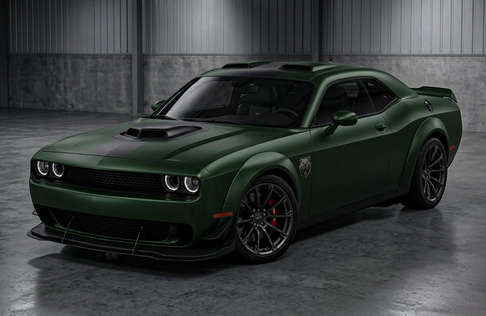
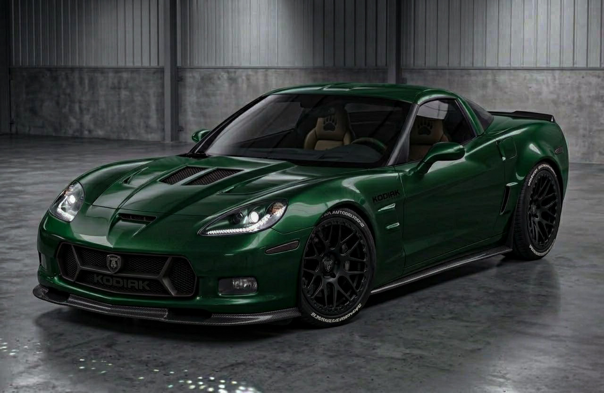
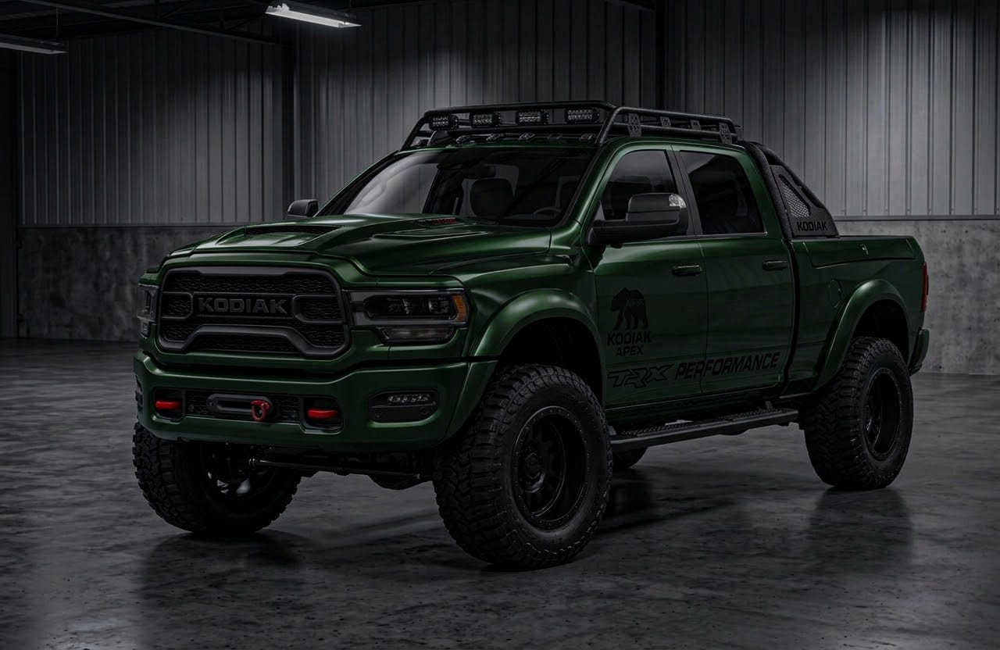

NUESTRA LÍNEA DE VEHÍCULOS
Potencia, diseño y elegancia, pensados para un nuevo estilo de vida.

MUSCLE CAR
KODIAK GRIZZLY
La maxima expresion del muscle Car americano. Equipado con un legendario motor V8 hemi supercargado, diseñado para dominar la calle con un rugido inconfundible y una aceleracion brutal.
Motor
6.2L V8 HEAVY HEMI Supercargado
Potencia
808 HP @ 6,300 RPM
Torque
1,044 Nm
Transmisión
Automática de 8 velocidades con Levas al Volante
0-100 km/h
2.3 segundos
Tracción
Trasera (RWD) con Diferencial Autoblocante

GRAN DEPORTIVO / HIGH PERFORMANCE
KODIAK PARDO
Elegancia aerodinámica y dinamismo puro. el Pardo combina un chasis liviano con un potente motor V8 central-delantero para ofrecer un manejo preciso en curvas y altas velocidades en autopista.
Motor
6.2L V8 Small Block (LS3)
Potencia
436 HP @ 5,900 RPM
Torque
575 Nm
Transmisión
Manual de 6 velocidades / Automática Paddle-Shift
Velocidad Máx.
306 km/h
Carrocería
Paneles de Fibra de Vidrio y Compuestos Livianos

EXTREME OFF-ROAD PICK-UP
KODIAK POLAR
La Pick-Up definitiva para los caminos más hostiles. Diseñada para soportar terrenos extremos sin perder velocidad, la Polar equipa una suspensión adaptativa de alto recorrido y un motor V8 supercargado que no conoce límites.
Motor
6.2L V8 Supercharged HEMI / EcoBoost High-Output
Potencia
702 HP @ 6,100 RPM
Suspensión
Amortiguadores Bilstein Black Hawk e2 Adaptativos
Tracción
4x4 Avanzada con Reductora y Modos de Manejo Off-Road
Despeje del Suelo
300 mm con Neumáticos All-Terrain de 35"
Capacidad Remolque
3,670 kg